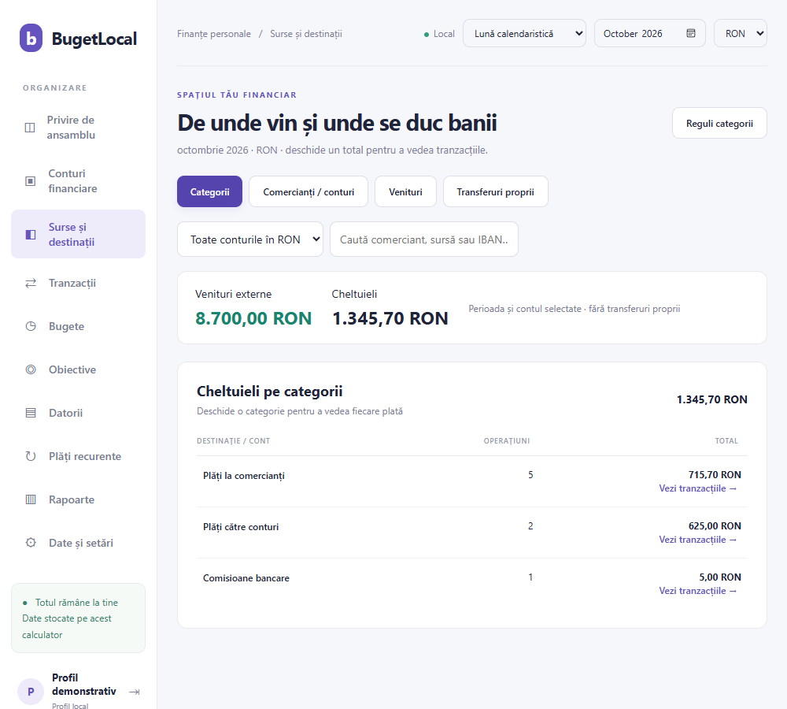

Mai multă claritate.
Mai mult control.
Vezi de unde vin banii și unde se duc. De la salariu la salariu sau pe lună calendaristică, cu datele păstrate pe calculatorul tău.
Versiunea 1.6.3 · installer de 49.7 MiB · instalarea necesită confirmarea utilizatorului.
Din extras, într-o imagine clară.
Situația ta, fără foi răzlețe.
- Instalezi și creezi un profilSetup-ul include aplicația și pregătește WebView2 dacă lipsește. Pentru componenta lipsă este necesar internet.
- Configurezi conturile și imporți extrasulCSV, XLS, XLSX sau PDF cu text. Verifici operațiunile înainte să le salvezi.
- Alegi perioada și vezi împărțireaSurse de venit, categorii și comercianți, cu acces la fiecare tranzacție.
- Păstrezi un backup criptatFișier cu parolă separată, pe care îl poți muta pe alt laptop.

Captură demonstrativă. Valorile nu reprezintă finanțele unei persoane.Perioada care ți se potrivește
Lună calendaristică sau intervalul dintre două salarii. Aceleași tranzacții, două moduri de a le vedea.
Reguli personale
Categorii pe comerciant sau cont beneficiar, separate pe fiecare profil. Transferurile proprii se identifică prin IBAN-urile configurate.
Planuri și limite
Bugete pe categorie, obiective de economisire, datorii și evidența plăților recurente. Aplicația nu execută plăți bancare.
Câteva lucruri de știut.
Îmi trimite extrasele sau tranzacțiile pe internet?
Importurile, tranzacțiile și rapoartele se procesează local. Aplicația nu accesează conturile bancare. O verificare opțională de versiune este permisă numai la pornire; în buildul actual este dezactivată. Windows și WebView2 au propriile mecanisme de actualizare.
Funcționează fără internet?
Da, pentru operațiunile financiare. Descărcarea aplicației și instalarea WebView2 când lipsește necesită internet. Dacă WebView2 este deja prezent, setup-ul include restul aplicației.
Pot avea un profil separat de al soțului sau soției?
Da. Fiecare profil are propriile conturi, tranzacții și reguli. Nu există sincronizare automată sau buget comun. Baza activă nu este criptată; separarea profilurilor este la nivelul aplicației. Conturile Windows separate protejează accesul reciproc la fișiere.
Ce fișiere bancare acceptă?
CSV, Excel XLS/XLSX cu toate foile și PDF cu text selectabil. Unele machete PDF pot necesita exportul Excel/CSV al băncii. OCR pentru scanări nu este inclus.
Se instalează fără să confirm nimic?
Deschizi fișierul descărcat și confirmi instalarea. Setup-ul pregătește componentele după această confirmare. Nu este necesară folosirea CMD sau instalarea SDK-ului .NET.
Buget și finanțe pentru Windows.
Descarcă installerul și urmează pașii de pe ecran. Manualul explică prima configurare, importurile și backupul.
SHA256 setup 1.6.3
776B5266A00EBCAF69F5D6F72655D4AF110B7CE0C5060A58F9D1B00B527FCEE5